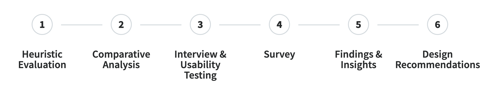
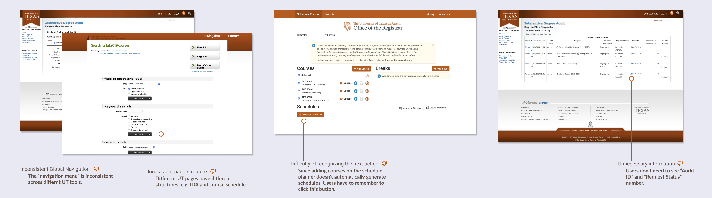
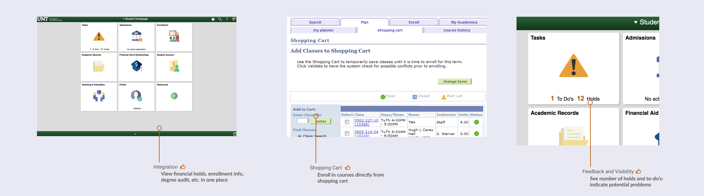

Course Registration
Usability Assessment
My Role in the project
UX Research Usability UX Design- Conducted competitive analysis to compare the strengths and weaknesses of competitors and make suggestions to the current system.
- Developed user journey map to identify pain points through the registration process.
- Formatted survey on Qualtrics for the whole class, and took full responsibility to extract result findings and graphs.
- Analyzed usability testing and survey results to investigate user problems and provide recommendations.
Methodology and tools
- Heuristic evaluation, comparative analysis
- Interview, usability testing, Qualtrics, survey
- Affinity diagram, user journey map, wireframing
Type
Course project with client (UT Registration)
Team
Claire, Beth, Chloe, Gabriel, Takahiro
PROBLEM BACKGROUND
How can we help students register for the courses they need?
State initiatives seek to increase UT 4-year graduation rate. Students need to take classes that fit the requirements to graduate on track. However, registration is a very high-stress activity for many students.
RESEARCH METHODOLOGY
User Research
HEURISTIC EVALUATION
Identify user issues across tools
Based on Nielson Norman's 10 Heuristics, we conducted heuristic evaluation on the current UT registration tools to find out the current usability issues.
Key findings
- Consistency and Standards: It seems that each tool is designed by different entities, so some features such as navigation and page structure are inconsistent across tools.
- Recognition rather than Recall: It's hard for first-time users to recognize where to click to the next step, and sometimes users have to remember where to see specific information.
- Aesthetics and Minimalist Design: Several pages show unnecessary information or too many details.
COMPARATIVE ANALYSIS
Compare with competitors to spot opportunities
3 director competitors and 3 indirect competitors are investigated to understand the strengths and weaknesses comparing to UT system.
Key findings
- Integration: Functionality that allows users to navigate between registration tools and contains them in one system.
- Shopping Cart: Tool for users to save courses in enrollment system to quickly enroll during registration time.
- Feedback and Visibility: System feedback to let users know why they might/have encountered an error.
SURVEY
Evaluate the usage of tools
The survey is conducted to collect a bigger dataset to evaluate the usage of UT tools. There are 33 questions in the survey, and 52 responses are collected.
I formatted the survey on Qualtrics for the whole class, including question logic, piping, ranking order. Also, I took full responsibility to extract result findings and graphs.
Key findings
- Registration difficulty: 41.8% didn't successfully register all intended classes, and 72.23% of which didn't successfully register are because the class is already full.
- Reflection on tools: UT tools such as UT Planner lack awareness, and some tools such as RIS are commonly used but ranked not useful.
- Satisfaction: Nearly half of the students replied feeling stressful about registration process, and not getting in class affects their graduation plans.

INTERVIEW & USABILITY TESTING
Explore the context in the registration process
We interviewed 6 students with different grad levels (junior, senior), departments, and special classifications (international students, changed major).
Before the interviews, we identified and categorized 7 registration processes and 7 corresponding UT tools.
During the interviews and usability testing, the interviewees shared their experiences using UT tools and walkthrough their last registration experiences first. Then, they were asked to think aloud and try to complete 7 tasks. We recorded the difficulties and feelings they experienced.